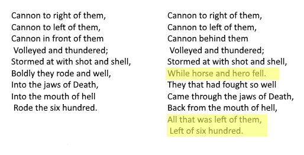

Half a league, half a league, |
Victorian audiences would pick up on this biblical reference, allowing Tennyson to equate the battle to stories such as that of David and Goliath. However, the ‘valley of death’ refers to Psalm 23, where the writer is describing God as a good shepherd. This could be interpreted as a criticism of those leading the armies during the Crimean war, who were often inexperienced in war and made poor decisions. They would have viewed themselves as superior and powerful (i.e. like gods in comparison to the soldiers working for them), but the other references to religion (“mouth of Hell”) are negative, suggests that those in power are not the ‘good shepherds’ they think they are.
Most of the poem is in dactylic diameter, but this line is not. This draws attention to the word ‘blunder’d’. ‘Blunder’ means ‘a stupid or careless mistake’ (Collins English Dictionary), thus highlighting the ineptitude of those in power in the army.
The repetition here shows how Tennyson is criticising the Victorian attitudes to order- the soldiers are doing what they have been instructed to do by their social superiors, and this is leading to their deaths. Consequently, it is suggested that the soldiers should have more freedom to challenge what they feel is wrong.
This word is onomatopoeic, which helps to create a
sense of empathy with the soldiers, as it mimics the sound of the guns.
This increases the tension as the listener feels as if they are
experiencing the battle first-hand, where their lives would be in danger.
There are several words repeated in the poem ending with ‘-ered’,
which has a sound similar to ‘err’, which suggests an error or indecision.
This has two interpretations- it can be referencing
the ‘glory’ of the Light Brigade, i.e. the world is wondering when
(if at all) it will forget their bravery, portraying the Light Brigade
as noble and fearless. On the other hand, the world could be wondering
why the decision was made, acting as a criticism of the military.
Similarly, the word ‘wondered’ features the ‘err’ sound (see
“thunder’d”), suggesting a fault, yet the first part of the word ‘won’
connotes triumph and glory. Consequently, the word is connected with
both positive and negative imagery.
This sibilance mimics the sound of the swords, creating a soundscape for the listener, helping them to empathise with the soldiers.
This stanza is very similar to stanza 3, but with
some changes, all of which are negative, such as this line (see image below). This
suggests that the stanza has been revised, as if the initial idea
(i.e. the order for the soldiers to go into battle) has been realised
to be a mistake.
